Leadership Team
Meet the administrative and operational heart of HERO
Overview
HERO has two branches: an administrative branch overseen by the Board of Directors and an operational branch overseen by the Operations Board. Together, the boards work to maintain the integrity of HERO's policy decisions, mission, and vision.
Meet the Board
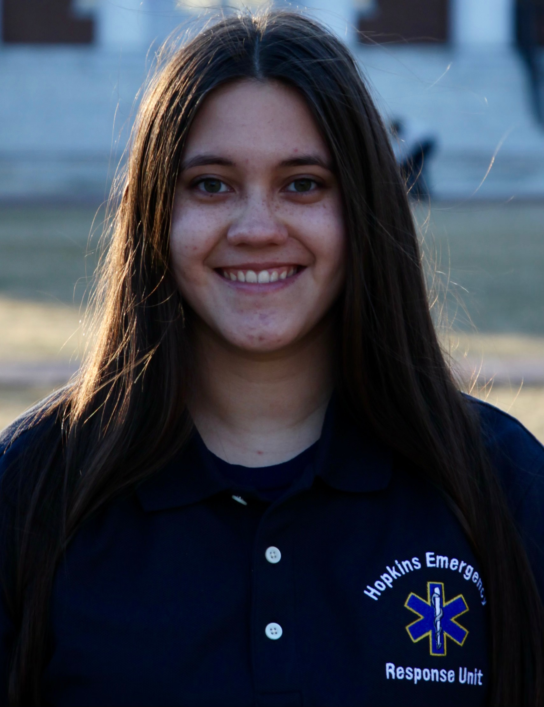
Captain: Alyssa Fromelius
Email
Alyssa Fromelius (she/her/hers) is honored to be serving as the Captain for 2023. Fromelius majors in Public Health and Philosophy (co. 2025). Originally from Reno, Nevada, she earned her Basic EMT license and her Advanced EMT License in 2021. Ever since, Fromelius has worked as an ER Technician in both the adult and pediatric trauma units, volunteered as an AEMT at a rural Nevada fire station, and worked as an AEMT for a local water park. She joined HERO in January 2022 and became a Duty Officer in September 2022. She previously served as a HERO Selections Officer in 2022. Fromelius also conducts research at Bloomberg Public Health School regarding injury prevention efforts in trauma centers. In her spare time, Fromelius enjoys experimenting with new recipes and working out.
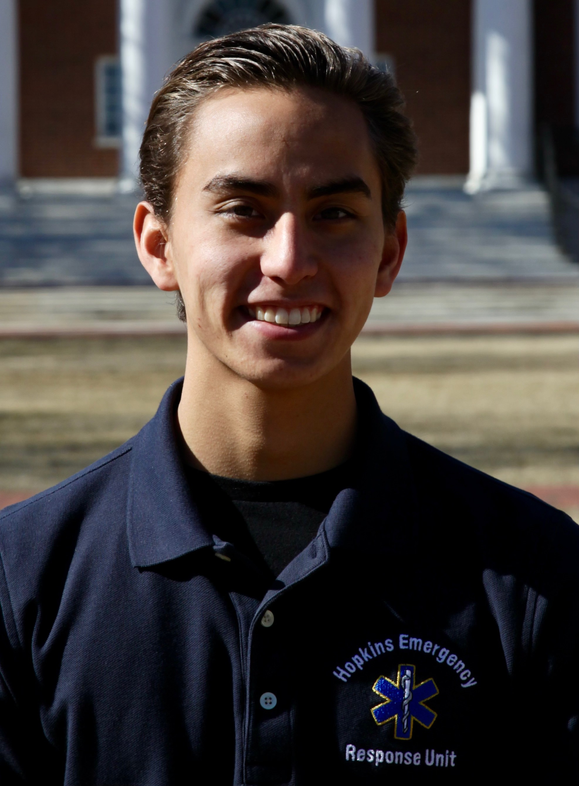
President: Reef Ide
Email
Reef is a senior from Windermere, Florida studying Neuroscience, Economics, and Psychology. As HERO's President, he leads the Board of Directors and ensures that the unit achieves its long-term goals. He became an EMT during the summer of 2020 and is also a student-athlete on the Hopkins Swim Team. In his free time Reef researches spine tumors at Johns Hopkins Hospital, is a Florida Real Estate Broker, and a volunteer EMT in Baltimore County.
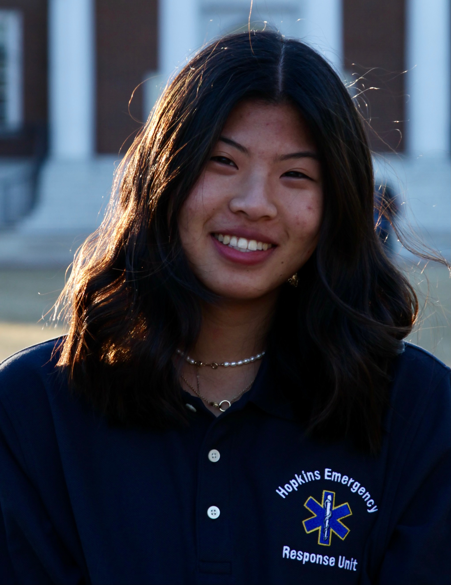
Personnel Lieutenant: Shirley Xie
Email
Originally from Princeton, New Jersey, Shirley Xie (co 2025) is majoring in Behavioral Biology and Public Health here at Hopkins. In her free time, Shirley also volunteers as a firefighter and EMT in Baltimore County and conducts research on opioid use disorder down at Hopkins Bayview. A major foodie, her goal is to try as many restaurants in Baltimore as humanly possible. She previously served as the social media coordinator, is a current Duty Officer on HERO, and is thrilled to be serving as HEROs Personnel Lieutenant this year.
EMS Lieutenant: Sophia Stryjewski
Email
Sophia is from a small town in Chester County PA, and is majoring in Molecular/Cellular Biology with a minor in Spanish (co 2025). She obtained her EMT certification through HERO and has since worked as an EMT at a waterpark in New Jersey, and currently volunteers at various fire stations in Baltimore County. When not doing EMS, she conducts research at the Wilmer Eye Institute and spends time in the pediatric ED at JHH as a Childlife volunteer. Sophia can frequently be found off campus for the weekends as she enjoys traveling to visit family and friends. On HERO, she has previously served as a Selections Officer, is a current Duty Officer, and is filling the new operational role of EMS lieutenant.
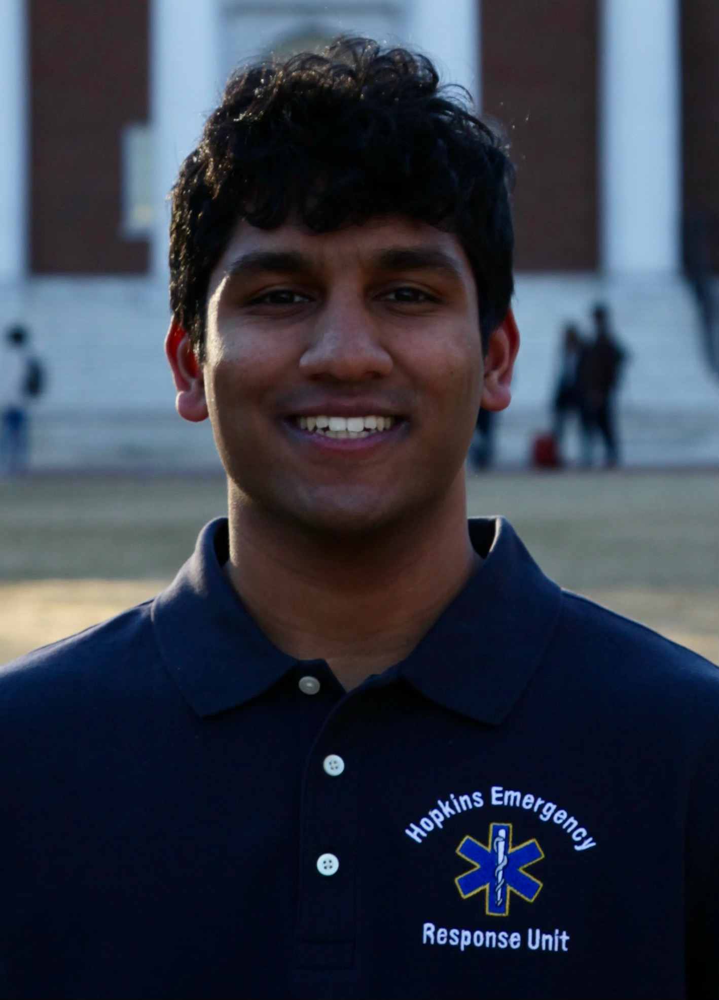
Equipment Officer: Rohan Herur
Email
Rohan is from Franklin, Massachusetts and is majoring in molecular and cellular biology with a minor in applied math & statistics. He joined HERO as a new EMT as a sophomore. Outside of HERO, Rohan does immunology research at Hopkins hospital, goes on runs, or plays tennis.
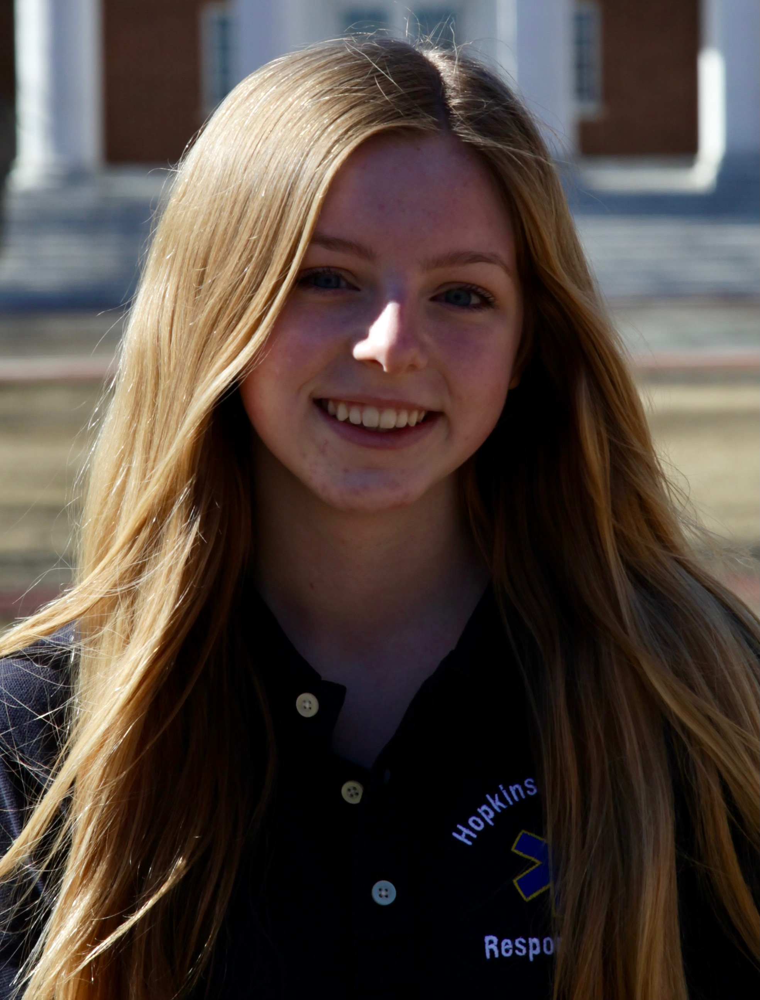
Recruitment Officer: Emma Anderson
Email
Emma is a junior from Illinois studying Biomedical Engineering. She joined HERO during her freshman year as a new EMT. As Recruitment Officer, Emma is in charge of the selections process, ensuring that applicants are seen and heard while choosing evaluations that would most effectively select those who would be the best fit for the unit.
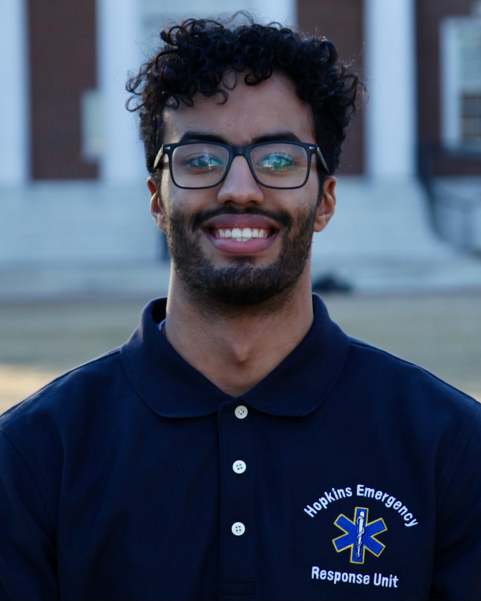
Training Officer: Mazin Elsharif
Email
Mazin is a senior majoring in neuroscience and minoring in visual arts. He joined HERO during his sophomore year as a new EMT and has previously served on the Selections Committee. As Training Officer, he is responsible for training the new class of EMTs and ensuring they pass all the necessary examinations to become an EMT. He also delivers effective trainings to HERO members every week.
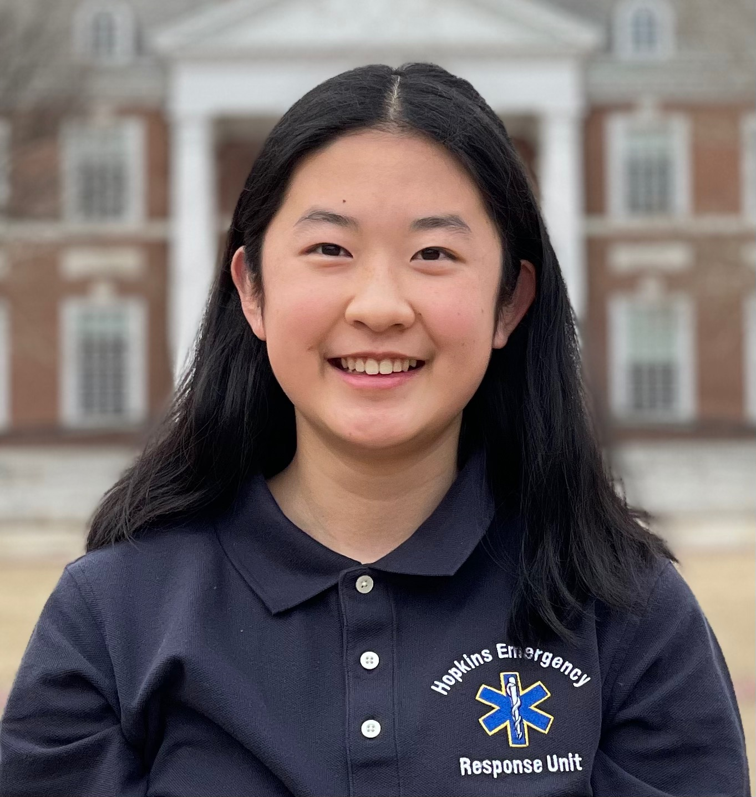
Secretary: Gloria Li
Email
Gloria is a junior from Burlington, Ontario, Canada double majoring in public health and natural sciences. She joined HERO as a freshman and was a new EMT. As secretary, Gloria helps ensure organization within HERO and manages HERO's social media. In her free time, Gloria loves volunteering, listening to music, and learning new things.
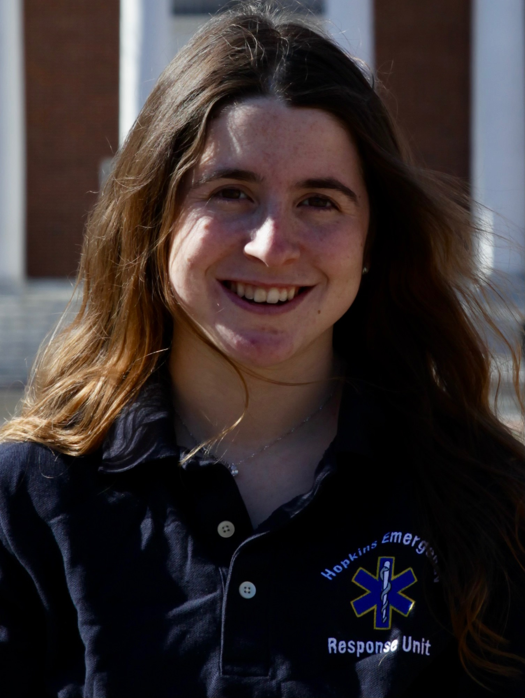
Treasurer: Zoë Shane
Email
Zoë is a senior from San Francisco, California studying Public Health and Economics. As treasurer, Zoë finds funding sources for HERO and successfully raises moeny for the organization. She is deeply passionate about emergency medicine and is in the process of becoming a paramedic. Outside of HERO, Zoë is a competitive sailor, avid reader, and volunteer at BARCS (Baltimore Animal Rescue & Care Shelter).
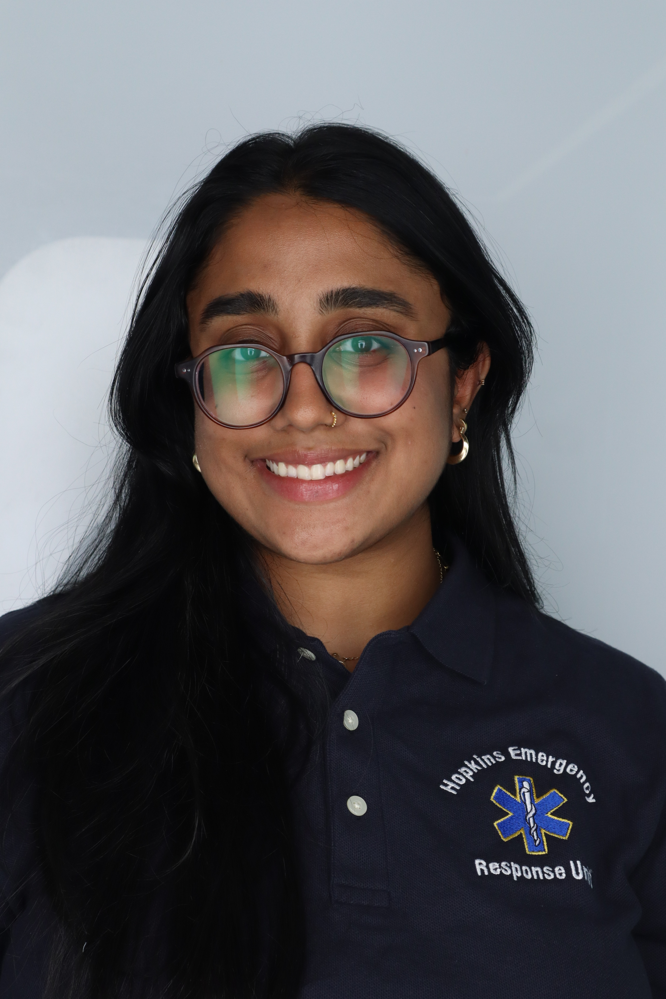
Member At Large: Aashi Mendpara
Email
Aashi is a junior studying neuroscience. As Member at Large, she helps bring the voice of all of HERO's members to the board.
Meet the Coordinators
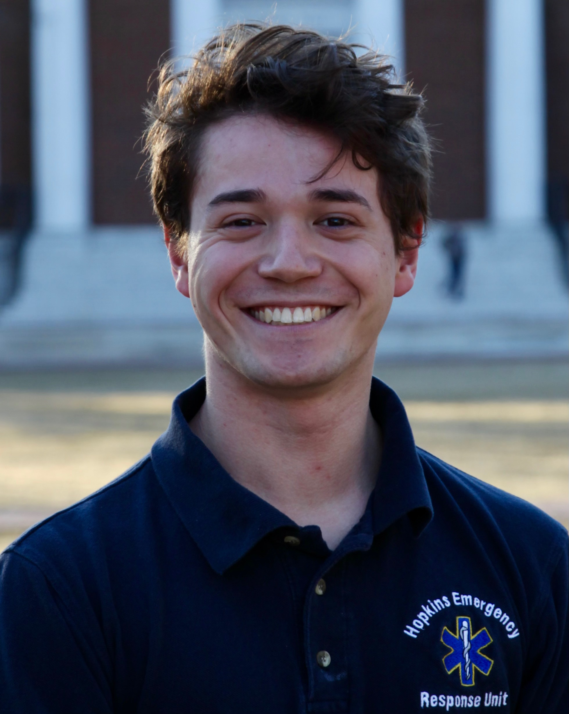
Training Coordinator: Zach Camhi
Email
Zach is a senior studying neuroscience. He collaborates with the Training Officer to design and execute customized weekly trainings to all HERO members, helping ensure our continued quality service.
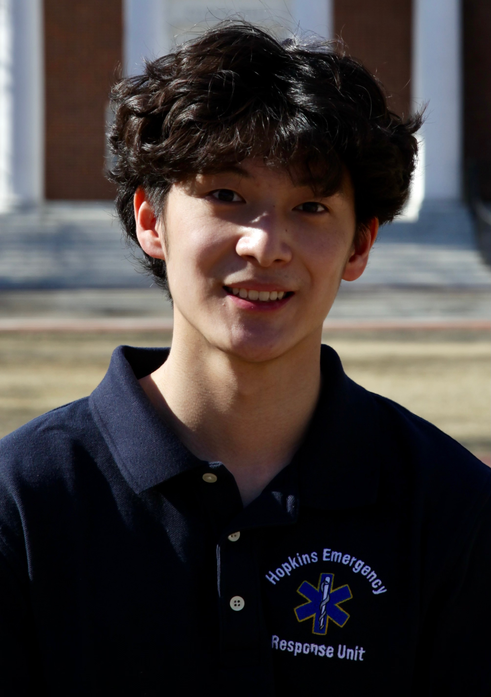
CPR & Stop the Bleed Coordinator: Sam Suh
Email
Sam is a senior studying medicine, science, and the humanities. He arranges HERO's CPR and Stop the Bleed classes for community members.
 Equipment Coordinator: Drew Cavanagh
Email
Equipment Coordinator: Drew Cavanagh
Email
Drew is a sophomore majoring in neuroscience. He assists the Equipment Officer in organizing HERO's inventory, ensuring our supplies are ample and functional, and maintaining our squad room as an excellent space for HERO's various uses of it.
 Standby Coordinator: Rowan Mohamed
Email
Standby Coordinator: Rowan Mohamed
Email
Rowan is a junior majoring in public health. She arranges HERO's standbys, so that we are present to provide emergency medical services at events like sports games to major Hopkins traditions such as Commencement.
Social Media Coordinator: Cameron Fields
Email
Cameron is a sophomore and works with the Secretary to manage HERO's social media and public presence. Cameron offers designs HERO's Instagram graphics and offers creative insight and ideas.
Selections Officers
-

Athena Cummings
-

Tom Wang
-

Will Taggart
-

Micaela Rodriguez Steube